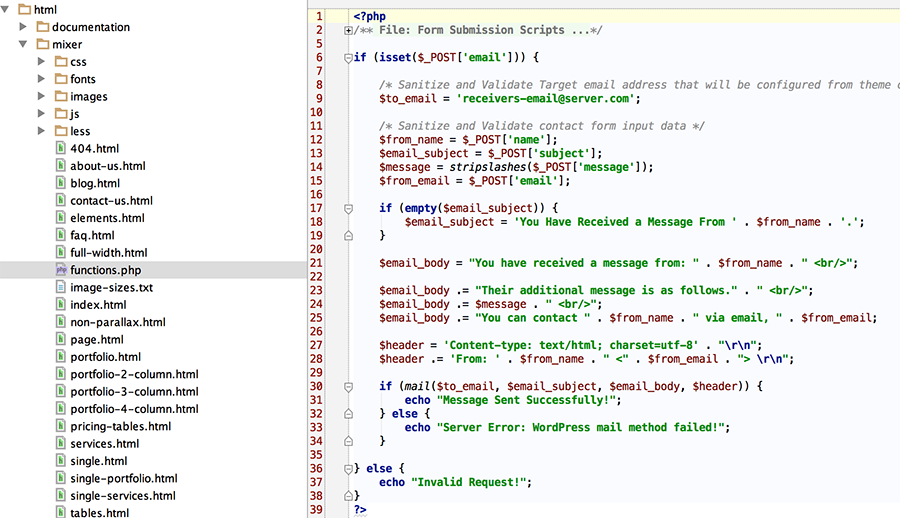
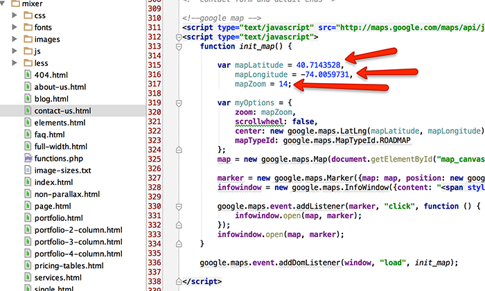
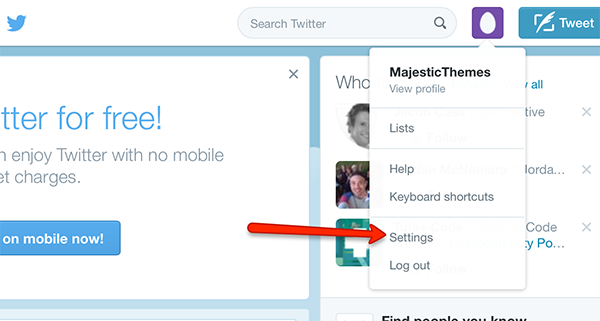
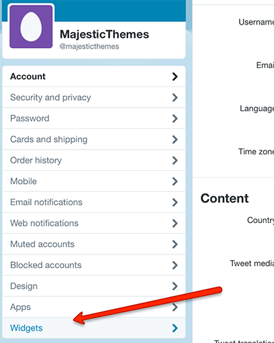
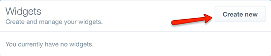
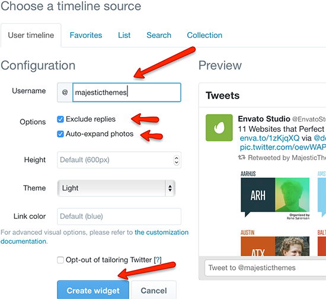
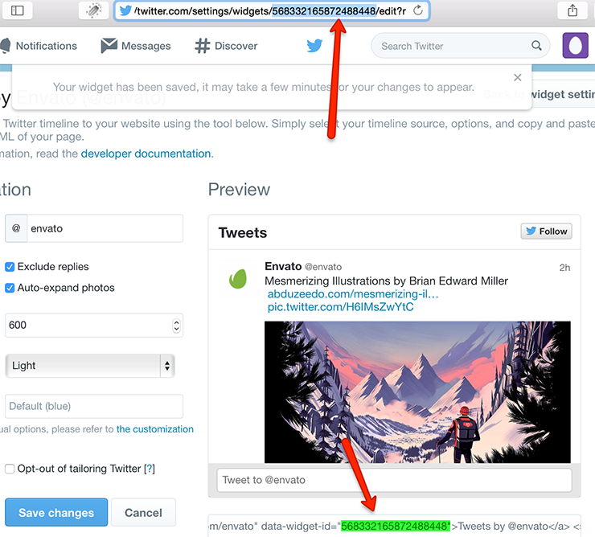
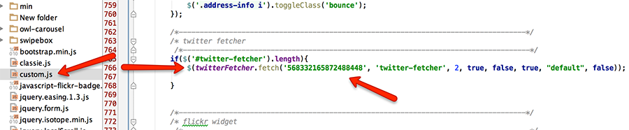
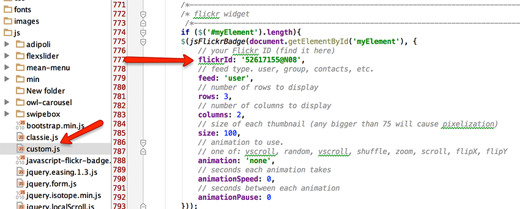

Introduction
This documentation is last updated on 4 March 2015.
Thank you for purchasing Mixer HTML Template. If you have any question that is beyond the scope of this documentation, Please feel free to Contact me from my profile page.
Disclaimer:
We offer limited support for customers. We only provide support for our
themes/templates and their core features. We cannot guarantee our themes will work properly with all
third party plugins and server environments. If you plan on adding numerous plugins to this theme then
please note, We cannot facilitate support for any conflicts that might arise with this theme's default
functionality. This theme/template is presented as it is.
If you like this theme/template, Please support us by rating this theme with 5 stars (How to rate?)
{kind=link}
File Structure of the template
Mixer template has simple file structure. It has 22 pages with 4 home page variations. All pages are inside the package with relative names. This template contains all files in related directories.
css directory container all stylesheet files used in this template.
fonts directory container all font files.
images directory have all necessary images for this template.
HTML Files
There are about 24 HTML files in this template. All are files are named according to its template kind. Header have necessary code like inclusions of css files and browser related js files. Body HTML Structure is clean and easy to understand.
CSS Files
There are lots of css files in this template. All are included in related pages. Other than helping plugin files this theme have main.css file and some responsive css files which have the basic css code. This template is based on bootstrap so it uses bootstrap grid system and have all related files included .
JavaScript Files
This template have lots of js files included. All files are included in footer area of the template. Base files is custom.js files which have all the related code. All other files have scripts from helping plugins etc.
Fonts
This template have retina ready icons which are font based. We have used Font Awesome for all the icons used in this template. Fonts directory have all needed font files.
PHP Script files
As we have forms in this template and we have to send emails using php mail functions. Functions directory have php script files to handle email functionality form all forms.
LESS Files
That template contains LESS files for developers who wants to work in less. We have not used js to process LESS. We used prepros for that so you can use js or any less processor to achieve that.
Home Page Variations
This theme have five different home pge variations. Four are parallax and one is non-parallax version. Home page files are listed below.
-
First variation:
index.htmlThis home variation have parallax effects. You can see it on live demo by clicking here
-
Second variation:
variation-2.htmlThis home variation have parallax effects. You can see it on live demo by clicking here
-
Third variation:
variation-3.htmlThis home variation have parallax effects. You can see it on live demo by clicking here
-
Fourth variation:
variation-4.htmlThis home variation have parallax effects. You can see it on live demo by clicking here
-
Fifth variation:
non-parallax.htmlThis home variation is non-parallax and you can visit all pages from this variation. It is same as parallax variation two but without sticky header and internal top navigation. You can see it on live demo by clicking here
Home page variations html structure
Structure for all home page variations is pretty much same. Everything is very simple to understand and properly commented. Header area have Logo, Menu and contact details along with social icons. Home page areas are explained below.
Slider: We have used flex slider for slider area. You can see its section just after header .
About: About section is different in all variations by icons and styles but main structure is same. It is three column info area along with big heading and full width text on top.
Team: Team area have different styles in all variations with creative animations. Code structure is simple and easily editable.
Blog: Some variations have blog areas. These are also easily editable and manageable.
Portfolio: Word details areas are carousel in most of the variations. It is beautifully designed and coded.
Partners: Some variations have partners carousel. You can list companies or affiliates in this carousel.
Google Map: You can use given google map in some variations. It had contact details in front and map is visible behind.
Contact Form: Fully working contact form is also given at the end of each product. It had different designs with same fields.
Footer: Some variations do not have footer area but the one it has have four columns with styled widgets.
Other pages structure
Pages other than home have very simple structure. In between header and footer area contents are wrapped in page container div. contents are very simple and you can manage all contents according to the management given in each page. Be careful about using and understanding classes.
Setting up contact forms
This templates have contact form on various places. All forms can be configured by only one script which is placed in functions.php files in root directory. Very basic thing is to change email from this file to receive emails to your required email address. If you want to make changes in email body then you have have some basic php knowledge. Follow screenshot give below.
Setting up google maps
Google map is used in this template at several places. You have to know your location latitude and longitude to add in map scripts. Also you can set zoom level for your map. Click here to get latitude and longitude of your location. You can easily configure your map by following screenshot given below.

Setting Twitter Widget
In this template you can add display tweets in footer area. To set up your twitter widgets you have to follow some steps. Twitter widget needs twitter widget id from your twitter account. You can display tweets from any account but for widget id you have to login to your account on twitter website. After you log in you have to go to settings page.
After that you have to select widgets option from the left menu.
You have to create a widget by clicking 'Create Widget' button. You can add any twitter id to fetch tweets from and set options etc. After finishing your settings click create widget button.


After widget is created you have to copy widget ID and paste it in your twitter fetcher function in main.js file of js directory.

You can paste your twitter id in js > custom.js file on location mentioned in following screenshot.

Setting Flickr Widget
You can display your flick photo stream in your template footer. To set up your flickr widget you have to make some settings. You have to get your flick id against your flickr user name. You can get your flick id from http://idgettr.com/
After getting the id you have to copy and paste this ID in script file of your flickr widget. You can also set number of photos to display in that script call. Please follow screenshot given below.

Content Distribution Network
This template uses some external helping libraries to manage several things. It is using google fonts, shim old browser support js etc. Files are listed below.
- Raleway Google Font:
http://fonts.googleapis.com/css?family=Raleway - Open Sans Google Font:
http://fonts.googleapis.com/css?family=Open+Sans -
HTML5 Shim Old Browser Support:
http://html5shim.googlecode.com/svn/trunk/html5.js
Thanks Again!
Once again, thank you so much for purchasing this Template As I said at the beginning, I'd be glad to help you if you have any questions relating to this Code. No guarantees, but I'll do my best to assist. If you have a more general question relating to the themes on ThemeForest, you might consider visiting the forums and asking your question in the "Item Discussion" section.